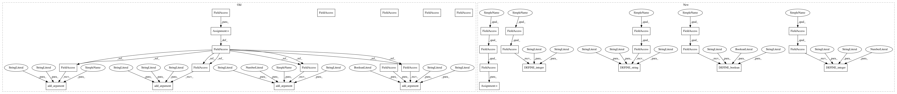

0785f0c037806584b000fe7b2b2ae8888980f3ed,tutorials/image/cifar10/cifar10_multi_gpu_train.py,,,#,52
Before Change
import tensorflow as tf
import cifar10
parser = cifar10.parser
parser.add_argument("--train_dir", type=str, default="/tmp/cifar10_train",
help="Directory where to write event logs and checkpoint.")
parser.add_argument("--max_steps", type=int, default=1000000,
help="Number of batches to run.")
parser.add_argument("--num_gpus", type=int, default=1,
help="How many GPUs to use.")
parser.add_argument("--log_device_placement", type=bool, default=False,
help="Whether to log device placement.")
def tower_loss(scope, images, labels):
Calculate the total loss on a single tower running the CIFAR model.
After Change
import tensorflow as tf
import cifar10
FLAGS = tf.app.flags.FLAGS
tf.app.flags.DEFINE_string("train_dir", "/tmp/cifar10_train",
Directory where to write event logs
and checkpoint.)
tf.app.flags.DEFINE_integer("max_steps", 1000000,
Number of batches to run.)
tf.app.flags.DEFINE_integer("num_gpus", 1,
How many GPUs to use.)
tf.app.flags.DEFINE_boolean("log_device_placement", False,
Whether to log device placement.)
def tower_loss(scope, images, labels):
Calculate the total loss on a single tower running the CIFAR model.
In pattern: SUPERPATTERN
Frequency: 3
Non-data size: 32
Instances
Project Name: tensorflow/models
Commit Name: 0785f0c037806584b000fe7b2b2ae8888980f3ed
Time: 2018-01-04
Author: neal@nealwu.com
File Name: tutorials/image/cifar10/cifar10_multi_gpu_train.py
Class Name:
Method Name:
Project Name: tensorflow/models
Commit Name: 0785f0c037806584b000fe7b2b2ae8888980f3ed
Time: 2018-01-04
Author: neal@nealwu.com
File Name: tutorials/image/cifar10/cifar10_multi_gpu_train.py
Class Name:
Method Name:
Project Name: tensorflow/models
Commit Name: 0785f0c037806584b000fe7b2b2ae8888980f3ed
Time: 2018-01-04
Author: neal@nealwu.com
File Name: tutorials/image/cifar10/cifar10_eval.py
Class Name:
Method Name:
Project Name: tensorflow/models
Commit Name: 0785f0c037806584b000fe7b2b2ae8888980f3ed
Time: 2018-01-04
Author: neal@nealwu.com
File Name: tutorials/image/cifar10/cifar10_train.py
Class Name:
Method Name: